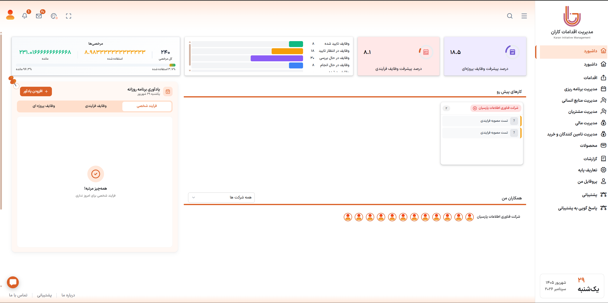
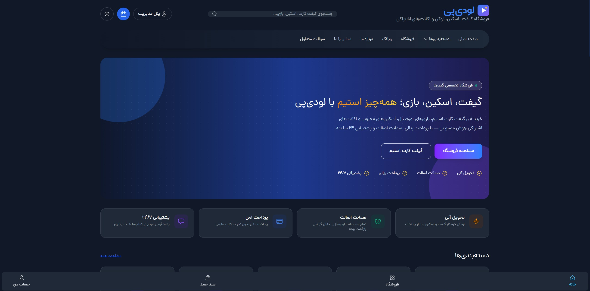
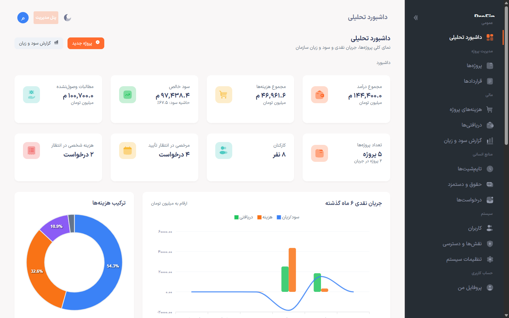
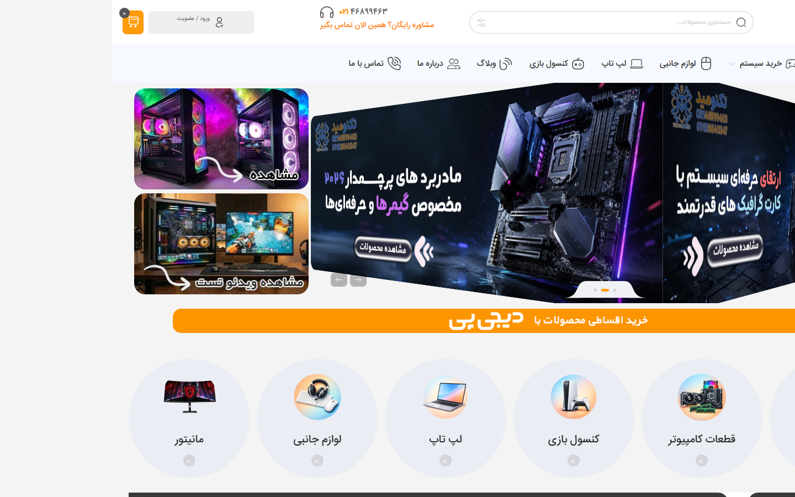
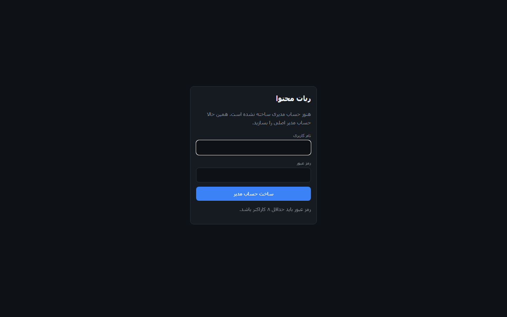
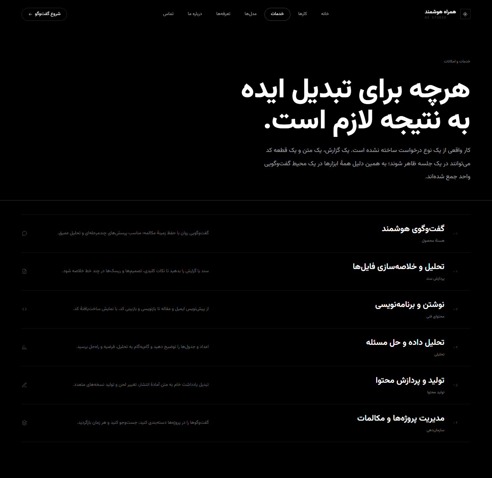
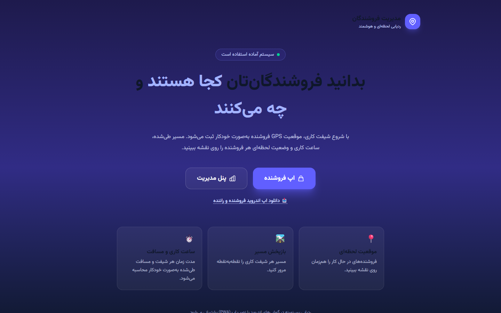
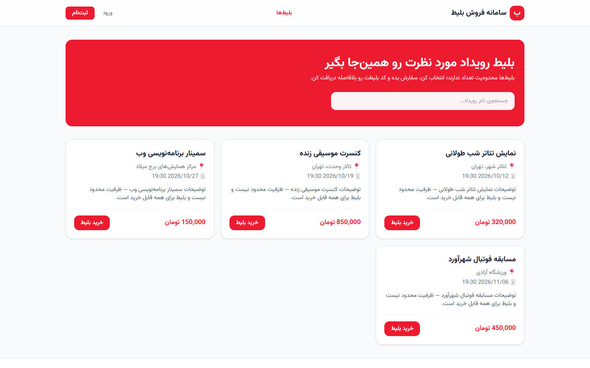

سامانه اتوماسیون اداری کاران
سامانه جامع مدیریت منابع انسانی و پروژهها در سطح ملی: حضور و غیاب، حقوق و دستمزد، مدیریت تسک مشابه Jira، ارزیابی ۳۶۰ درجه، تقویم جلسات و امنیت پیشرفته.
مشاهده جزئیات ←مجموعهای متنوع از سامانههای سازمانی و مالی، پلتفرمهای فروشگاهی، ابزارهای تحلیل داده، رباتهای هوش مصنوعی و نرمافزار دسکتاپ — که با لاراول، پایتون و اکوسیستم مدرن وب توسعه دادم.

سامانه جامع مدیریت منابع انسانی و پروژهها در سطح ملی: حضور و غیاب، حقوق و دستمزد، مدیریت تسک مشابه Jira، ارزیابی ۳۶۰ درجه، تقویم جلسات و امنیت پیشرفته.
مشاهده جزئیات ←
پلتفرم SaaS ارزیابی عملکرد سازمانها با مدلهای معتبر بینالمللی، سیستم پرسشنامه، درگاه پرداخت، API RESTful مستند و گزارشگیری پیشرفته.
مشاهده جزئیات ←
فروشگاه آنلاین محصولات دیجیتال شامل گیفت کارت، بازی استیم و توکنهای ارز دیجیتال، با کیف پول داخلی، تیکتینگ، بلاگ و پنل مدیریت حرفهای.
مشاهده جزئیات ←
سامانه سازمانی با دو پنل مدیریت و کارمندی: مدیریت پروژه و قرارداد، هزینهها، تایمشیت، محاسبهی خودکار حقوق و دستمزد و گزارش سود و زیان تفکیکی هر پروژه.
مشاهده جزئیات ←
فروشگاه کامل قطعات و سیستمهای کامپیوتری با سیستمساز آنلاین (PC Builder)، کیف پول، درگاه پرداخت، تیکتینگ، بلاگ و پنل مدیریت حرفهای.
مشاهده جزئیات ←
نرمافزار دسکتاپ ویندوز برای کسبوکارهای کوچک: فاکتور فروش و خرید، صندوق و بانک، انبارداری با بهای تمامشدهی موزون، مطالبات و گزارش سود و زیان.
مشاهده جزئیات ←
پلتفرم سلفهاست که محتوا را از منابع گوناگون جمع میکند، با هوش مصنوعی بازنویسی میکند و روی تلگرام، بله، واتساپ، ایکس و وردپرس منتشر میکند.
مشاهده جزئیات ←
رابط کاربری یک پلتفرم عامل هوش مصنوعی فارسی؛ گفتوگوی راستچین مدرن، رندر Markdown و کد، و عناصر سهبعدی تعاملی با Three.js.
مشاهده جزئیات ←
اپ فروشنده بهصورت PWA با ردیابی پسزمینه و صف آفلاین، و پنل مدیر با نقشه زنده، محدودهی مجاز (Geofencing)، بازپخش مسیر و گزارش PDF روزانه.
مشاهده جزئیات ←
CRM ماژولار برای تعمیرگاههای الکترونیک: پذیرش و پیگیری تعمیرات، مشتریان، کاتالوگ قطعات، فروش و انبار، همراه با مدیریت نقشها و دسترسیها.
مشاهده جزئیات ←
سامانهی سفارشگیری و پشتیبانی تیکتی با پنل کاربر و پنل ادمین مستقل، احراز هویت کامل و مدیریت سفارشها و تیکتها.
مشاهده جزئیات ←